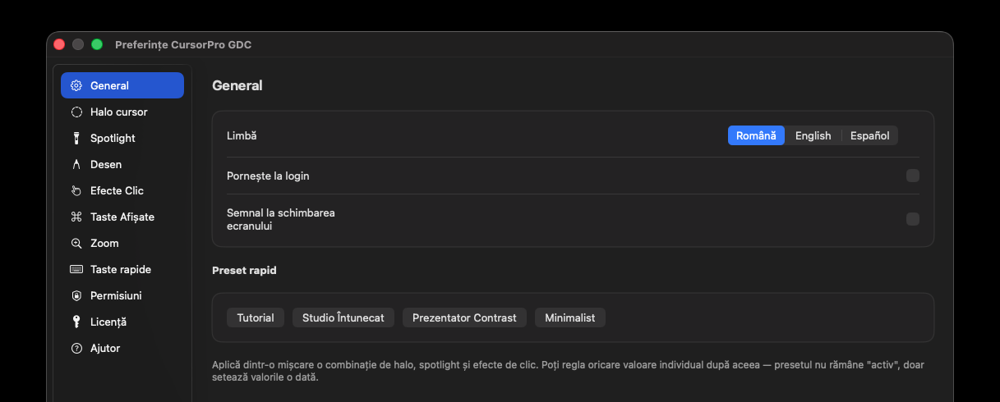
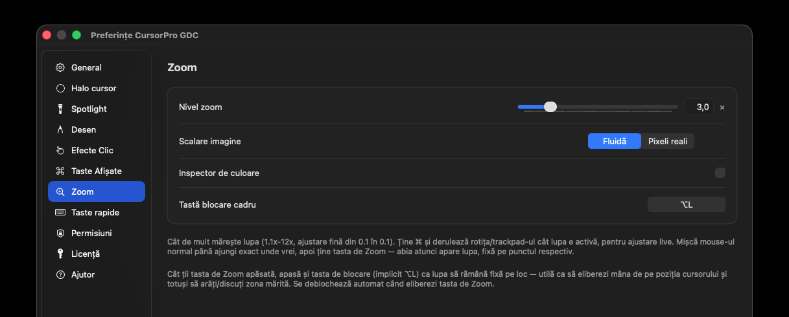

Halo pe cursor, spotlight care întunecă restul ecranului, desen live peste orice aplicație și o lupă care mărește exact zona de care ai nevoie — toate dintr-o singură aplicație ușoară, nativă pe Mac și Windows.
Fiecare mod se activează ținând o tastă — nimic nu rămâne pornit din greșeală în timpul unei prezentări live.
Un cerc vizibil în jurul cursorului, ca publicul să-l urmărească ușor pe ecran proiectat sau distribuit. Stil, culoare și mărime — toate reglabile.
Întunecă tot ecranul, mai puțin un cerc luminos în jurul cursorului — perfect ca să atragi atenția exact acolo unde vorbești.
Liber, săgeți, cercuri sau cadre de selecție, peste orice aplicație — fiecare unealtă cu propria tastă rapidă, reconfigurabilă.
O lupă rotundă care mărește live zona din jurul cursorului — arată clar detalii mici, fără să dai zoom în aplicația prezentată.
Descarcă arhiva .zip, dezarhiveaz-o, apoi dublu-click pe CursorProGDC.pkg — aplicație semnată și verificată oficial de Apple, fără avertismente.
La prima pornire, macOS cere Accesibilitate și Înregistrare Ecran — necesare ca aplicația să funcționeze pe tot ecranul.
Trial-ul pornește automat. Toate funcțiile sunt active — activezi o licență direct din Preferințe, oricând vrei.

